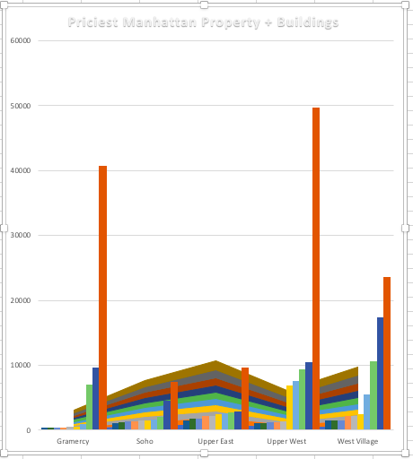
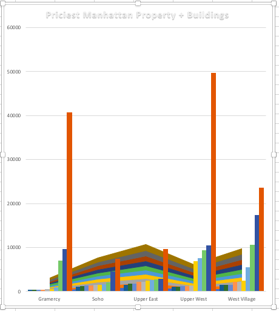
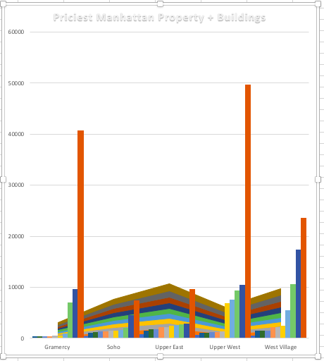
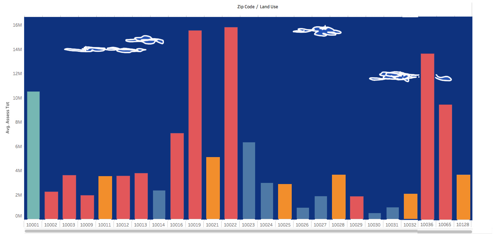

float: center; width: 34%; margin-left: 5%; margin-bottom: 0.5em; padding-right: 3.8em">
float: center; width: 34%; margin-left: 5%; margin-bottom: 0.5em; padding-right: 3.8em">
Just how pricey are the most expensive apartments on the Upper West Side? Or the West Village? Which neighborhood can boast (or decry) the most expensive building of them all? Based on PLUTO data from NYC.gov, here are two data visualizations that examine that question and look at relative values in five wealthy Manhattan neighborhoods: Gramercy, Soho, the Upper West Side, the Upper East Side, and the West Village. Both images reveal the spread in cost per square foot in the 20 highest-priced buildings, just pictured differently.
In the first to the left, the boxplot format makes it easy to compare the range, median, and quartiles by neighborhood. Note the log scale: there is a huge difference between the most and least expensive buildings even among the top 20s represented here. The Upper West Side has the largest range, and also houses the priciest building, marked with a "1". It is worth a whopping $49,697 per square foot. Gramercy contains the second most expensive butilding, marked with a "2" (valued at $43,700 per square foot). At the bottom of the pack, the most expensive building in Soho is a mere $7,393 per square foot.
float: center; width: 34%; margin-left: 5%; margin-bottom: 0.5em; padding-right: 3.8em">
What is the identity of that #1 uber-expensive building on the Upper West Side? We will find out in the interactive version of this chart in a future assignment! The image on the upper right is another way of visualizing the same data but in a way suggestive of buildings, and also in a more original manner. I also like the colors more, and will be rethinking the colors in the next assignment. This second chart is one of many visual experiments I made with this data.

Next, I decided to expand the range of data to get a broader look at total asset value in Manhattan, rather than in just five neighborhoods. I looked at the average assessed value (which I calculated) in all the zip codes of Manhattan, and then from those chose the top 25 zip codes for this chart. The bars are color coded by the median land use for that zip code, but in a later version I will look at mode, which makes more sense in this context (I will add a land use color key there). This last image, apart from some minor tweaks I will make, provides the blueprint for the final interactive p5 image."